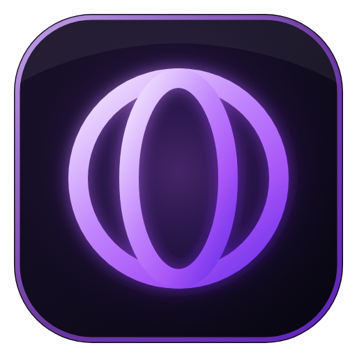

Welcome to nextGx Browser
Fast, distraction-free, and built for power users. Let's personalize your theme, wallpaper, privacy level, and sidebar apps in under 30 seconds.
Choose your look
Click any theme or curated dark wallpaper to preview it live.
Accent Theme
Start Page Wallpaper
Pick your browsing experience
You can fine-tune every single option anytime inside Settings.
Sidebar apps & Search engine
Pick the quick-access apps you want on your left rail and your preferred search engine.
Sidebar Quick Apps
Default Search Engine
Ready to launch
Make nextGx your default browser or bring your existing bookmarks along.
Set nextGx as your Default Browser
Open web links from any Windows app straight into nextGx Browser.
How it works on Windows 10/11: clicking Make Default opens Windows Default Apps → select nextGx Browser → click Set default.
Import Bookmarks
Bring bookmarks from Chrome, Edge, Brave, or Opera via HTML export.